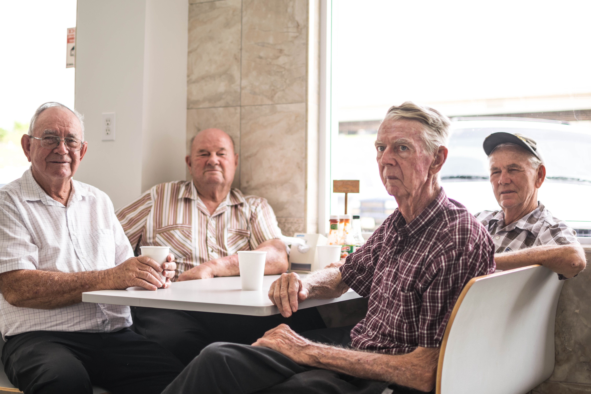
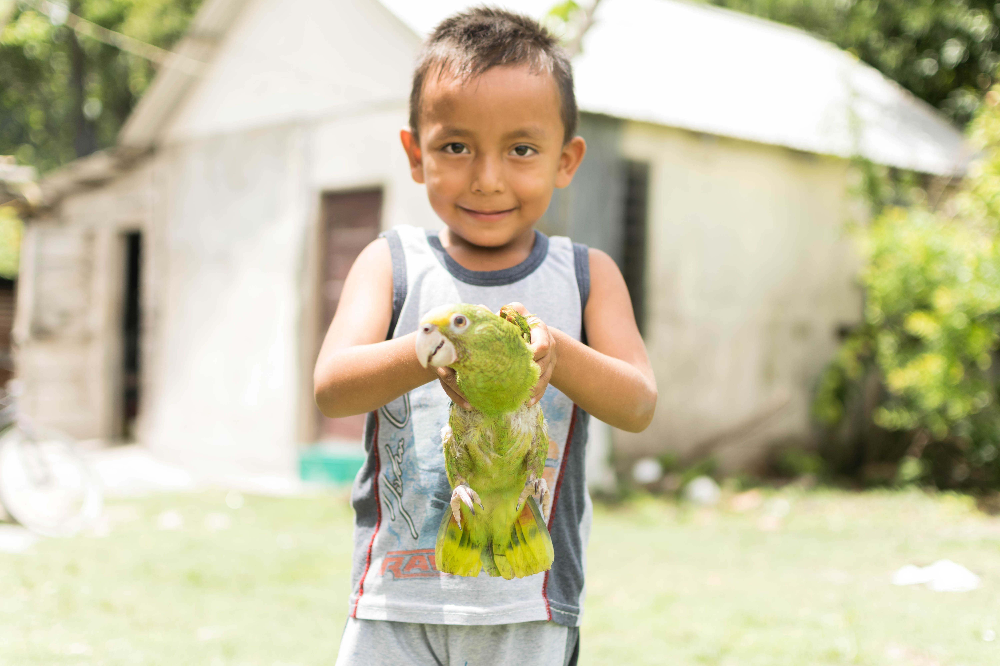
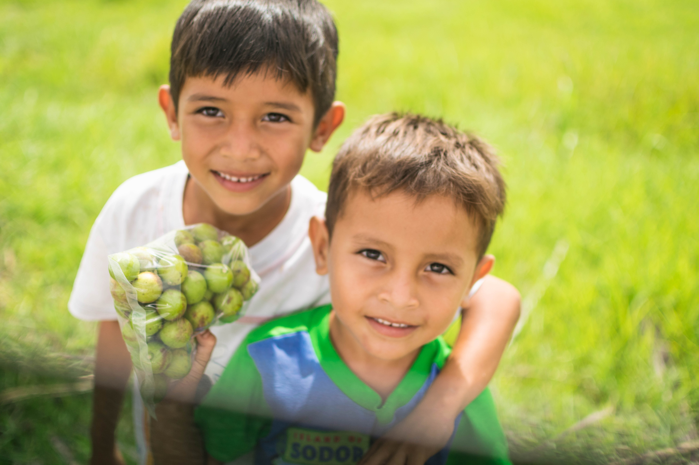
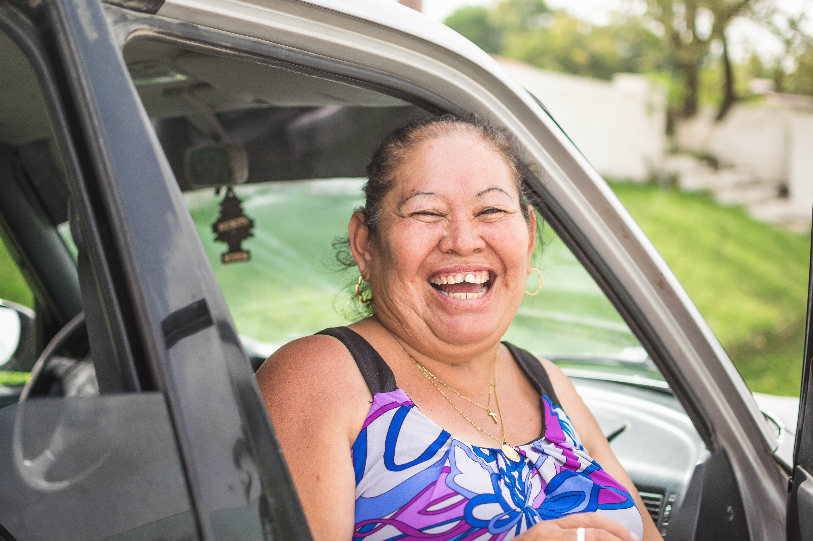
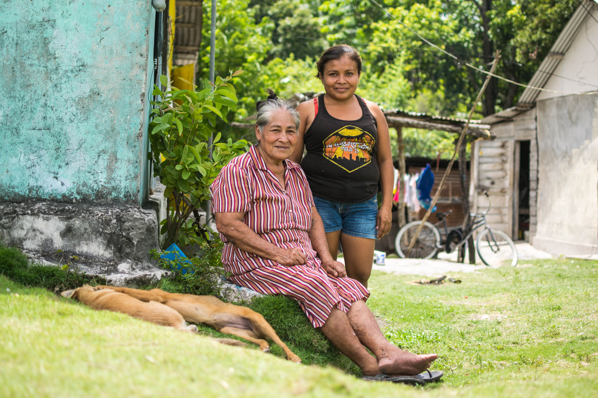
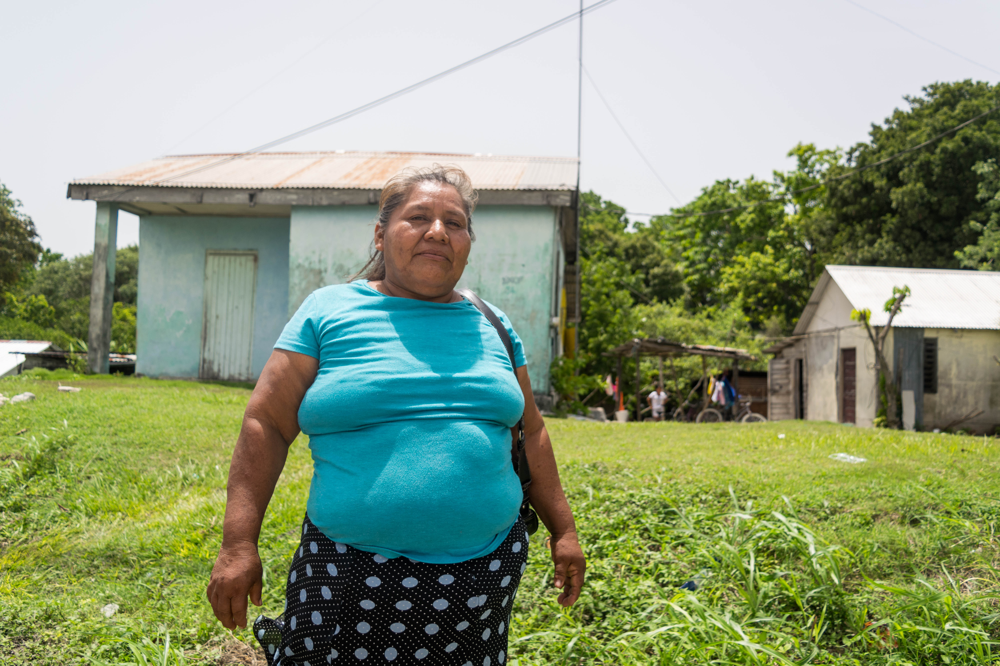
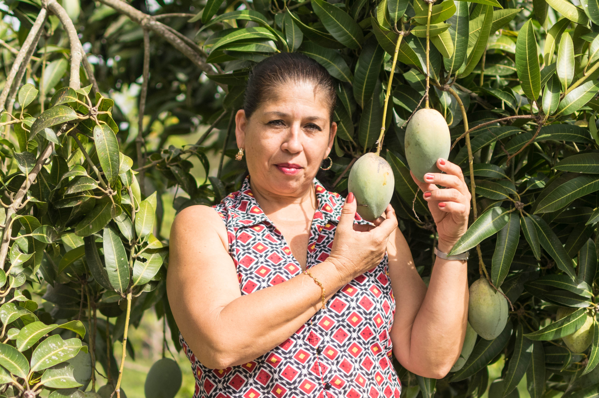
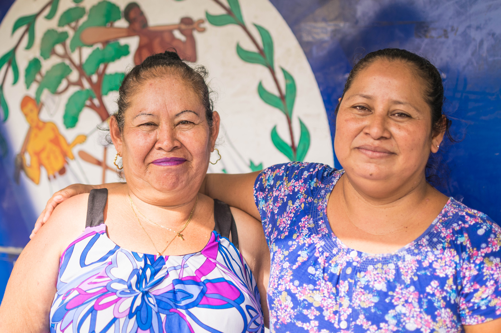
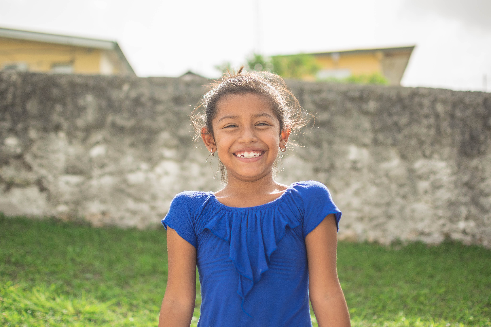
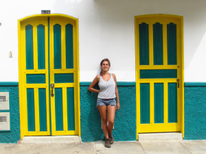

	<div id="primary" class="content-area">
		<main id="main" class="site-main" role="main">

			
				
<article id="post-99" class="post-99 page type-page status-publish hentry empty-entry-meta">
	
	<header class="entry-header">
		<h1 class="entry-title">BELICE</h1>	</header><!-- .entry-header -->

	<div class="entry-content">
		
<div data-carousel-extra="{&quot;blog_id&quot;:160719501,&quot;permalink&quot;:&quot;https:\/\/mundanos.net\/paises\/belice\/&quot;}" class="wp-block-jetpack-slideshow aligncenter" data-autoplay="true" data-delay="3" data-effect="slide"><div data-carousel-extra="{&quot;blog_id&quot;:160719501,&quot;permalink&quot;:&quot;https:\/\/mundanos.net\/paises\/belice\/&quot;}" class="wp-block-jetpack-slideshow_container swiper-container swiper-container-initialized swiper-container-horizontal wp-swiper-initialized" style="cursor: grab;"><ul class="wp-block-jetpack-slideshow_swiper-wrapper swiper-wrapper" style="width: 15960px; transition-duration: 0ms; transform: translate3d(-4200px, 0px, 0px); height: 560px;"><li class="wp-block-jetpack-slideshow_slide swiper-slide swiper-slide-duplicate" data-swiper-slide-index="16" style="width: 840px;" aria-hidden="true"><figure></figure></li><li class="wp-block-jetpack-slideshow_slide swiper-slide" data-swiper-slide-index="0" style="width: 840px;" aria-hidden="true"><figure></figure></li><li class="wp-block-jetpack-slideshow_slide swiper-slide" data-swiper-slide-index="1" style="width: 840px;" aria-hidden="true"><figure></figure></li><li class="wp-block-jetpack-slideshow_slide swiper-slide" data-swiper-slide-index="2" style="width: 840px;" aria-hidden="true"><figure></figure></li><li class="wp-block-jetpack-slideshow_slide swiper-slide swiper-slide-prev" data-swiper-slide-index="3" style="width: 840px;" aria-hidden="true"><figure></figure></li><li class="wp-block-jetpack-slideshow_slide swiper-slide is-transient swiper-slide-active" data-swiper-slide-index="4" style="width: 840px;" aria-hidden="false" tabindex="-1"><figure><span class="components-spinner"></span></figure></li><li class="wp-block-jetpack-slideshow_slide swiper-slide swiper-slide-next" data-swiper-slide-index="5" style="width: 840px;" aria-hidden="true"><figure></figure></li><li class="wp-block-jetpack-slideshow_slide swiper-slide" data-swiper-slide-index="6" style="width: 840px;" aria-hidden="true"><figure></figure></li><li class="wp-block-jetpack-slideshow_slide swiper-slide" data-swiper-slide-index="7" style="width: 840px;" aria-hidden="true"><figure></figure></li><li class="wp-block-jetpack-slideshow_slide swiper-slide" data-swiper-slide-index="8" style="width: 840px;" aria-hidden="true"><figure></figure></li><li class="wp-block-jetpack-slideshow_slide swiper-slide" data-swiper-slide-index="9" style="width: 840px;" aria-hidden="true"><figure></figure></li><li class="wp-block-jetpack-slideshow_slide swiper-slide" data-swiper-slide-index="10" style="width: 840px;" aria-hidden="true"><figure></figure></li><li class="wp-block-jetpack-slideshow_slide swiper-slide" data-swiper-slide-index="11" style="width: 840px;" aria-hidden="true"><figure></figure></li><li class="wp-block-jetpack-slideshow_slide swiper-slide is-transient" data-swiper-slide-index="12" style="width: 840px;" aria-hidden="true"><figure><span class="components-spinner"></span></figure></li><li class="wp-block-jetpack-slideshow_slide swiper-slide" data-swiper-slide-index="13" style="width: 840px;" aria-hidden="true"><figure></figure></li><li class="wp-block-jetpack-slideshow_slide swiper-slide" data-swiper-slide-index="14" style="width: 840px;" aria-hidden="true"><figure></figure></li><li class="wp-block-jetpack-slideshow_slide swiper-slide" data-swiper-slide-index="15" style="width: 840px;" aria-hidden="true"><figure></figure></li><li class="wp-block-jetpack-slideshow_slide swiper-slide" data-swiper-slide-index="16" style="width: 840px;" aria-hidden="true"><figure></figure></li><li class="wp-block-jetpack-slideshow_slide swiper-slide swiper-slide-duplicate" data-swiper-slide-index="0" style="width: 840px;" aria-hidden="true"><figure></figure></li></ul><a class="wp-block-jetpack-slideshow_button-prev swiper-button-prev swiper-button-white" role="button" tabindex="0" aria-label="Previous slide" style="top: 280px;"></a><a class="wp-block-jetpack-slideshow_button-next swiper-button-next swiper-button-white" role="button" tabindex="0" aria-label="Next slide" style="top: 280px;"></a><a aria-label="Pause Slideshow" class="wp-block-jetpack-slideshow_button-pause" role="button"></a><div data-carousel-extra="{&quot;blog_id&quot;:160719501,&quot;permalink&quot;:&quot;https:\/\/mundanos.net\/paises\/belice\/&quot;}" class="wp-block-jetpack-slideshow_pagination swiper-pagination swiper-pagination-white swiper-pagination-clickable swiper-pagination-bullets"><button class="swiper-pagination-bullet" tabindex="0" role="button" aria-label="Go to slide 1"></button><button class="swiper-pagination-bullet" tabindex="0" role="button" aria-label="Go to slide 2"></button><button class="swiper-pagination-bullet" tabindex="0" role="button" aria-label="Go to slide 3"></button><button class="swiper-pagination-bullet" tabindex="0" role="button" aria-label="Go to slide 4"></button><button class="swiper-pagination-bullet swiper-pagination-bullet-active" tabindex="0" role="button" aria-label="Go to slide 5"></button><button class="swiper-pagination-bullet" tabindex="0" role="button" aria-label="Go to slide 6"></button><button class="swiper-pagination-bullet" tabindex="0" role="button" aria-label="Go to slide 7"></button><button class="swiper-pagination-bullet" tabindex="0" role="button" aria-label="Go to slide 8"></button><button class="swiper-pagination-bullet" tabindex="0" role="button" aria-label="Go to slide 9"></button><button class="swiper-pagination-bullet" tabindex="0" role="button" aria-label="Go to slide 10"></button><button class="swiper-pagination-bullet" tabindex="0" role="button" aria-label="Go to slide 11"></button><button class="swiper-pagination-bullet" tabindex="0" role="button" aria-label="Go to slide 12"></button><button class="swiper-pagination-bullet" tabindex="0" role="button" aria-label="Go to slide 13"></button><button class="swiper-pagination-bullet" tabindex="0" role="button" aria-label="Go to slide 14"></button><button class="swiper-pagination-bullet" tabindex="0" role="button" aria-label="Go to slide 15"></button><button class="swiper-pagination-bullet" tabindex="0" role="button" aria-label="Go to slide 16"></button><button class="swiper-pagination-bullet" tabindex="0" role="button" aria-label="Go to slide 17"></button></div><span class="swiper-notification" aria-live="assertive" aria-atomic="true"></span></div></div>


<p style="font-size:19px;text-align:center;" class="has-text-color has-dark-gray-color"><strong><em>¿Dónde queda Belice? ¿Caribe? ¿África? ¿Asia?</em> </strong></p>


<p style="font-size:19px;text-align:center;" class="has-text-color has-dark-gray-color">No.
 Belice queda en Centroamérica, justo al sur de México y al este de 
Guatemala.  Su nombre oficial es Belize, que es en inglés, porque este 
pequeño país fue colonia inglesa hasta hace muy poco. La gente de allá 
me decía que siempre les hacían esas preguntas, que la mayoría pensaba 
que era una isla del Caribe o un país de África. Yo tampoco conocía 
Belice. Y tengo que admitir que fue de los países que más me impactó. Un
 poco de suerte y un poco de total incertidumbre hicieron que Belice 
fuera una de las mayores sorpresas de mis viajes. Un país al que iba de 
paso se convirtió en la casa de mi familia. En Belice viven apenas 
350.000 mundanos y, sin embargo, se hablan más de ocho lenguas. La 
diversidad de Belice es increíble: por eso quiero compartirte un poco de
 estas culturas tan lindas que cohabitan un mismo espacio pequeño en la 
costa del Caribe (además de tener una naturaleza asombrosa). Belice es 
mucho más que las playas alucinantes del Caribe y el Blue Hole 
(googléalo y te vas a quedar boquiabierto). ¡Bienvenidos a este pequeño 
país lleno de vida!</p>


<hr class="wp-block-separator">


<h4 class="has-dark-gray-color" style="text-align:center;">BELICE EN UN DÍA Y MEDIO</h4>


<div data-carousel-extra="{&quot;blog_id&quot;:160719501,&quot;permalink&quot;:&quot;https:\/\/mundanos.net\/paises\/belice\/&quot;}" class="wp-block-jetpack-slideshow aligncenter" data-autoplay="true" data-delay="3" data-effect="slide"><div data-carousel-extra="{&quot;blog_id&quot;:160719501,&quot;permalink&quot;:&quot;https:\/\/mundanos.net\/paises\/belice\/&quot;}" class="wp-block-jetpack-slideshow_container swiper-container swiper-container-initialized swiper-container-horizontal wp-swiper-initialized" style="cursor: grab;"><ul class="wp-block-jetpack-slideshow_swiper-wrapper swiper-wrapper" style="width: 5040px; transition-duration: 0ms; transform: translate3d(-4200px, 0px, 0px); height: 560px;"><li class="wp-block-jetpack-slideshow_slide swiper-slide swiper-slide-duplicate swiper-slide-next swiper-slide-duplicate-prev" data-swiper-slide-index="3" style="width: 840px;" aria-hidden="true"><figure></figure></li><li class="wp-block-jetpack-slideshow_slide swiper-slide swiper-slide-duplicate-active" data-swiper-slide-index="0" style="width: 840px;" aria-hidden="true"><figure></figure></li><li class="wp-block-jetpack-slideshow_slide swiper-slide" data-swiper-slide-index="1" style="width: 840px;" aria-hidden="true"><figure></figure></li><li class="wp-block-jetpack-slideshow_slide swiper-slide" data-swiper-slide-index="2" style="width: 840px;" aria-hidden="true"><figure></figure></li><li class="wp-block-jetpack-slideshow_slide swiper-slide swiper-slide-prev swiper-slide-duplicate-next" data-swiper-slide-index="3" style="width: 840px;" aria-hidden="true"><figure></figure></li><li class="wp-block-jetpack-slideshow_slide swiper-slide swiper-slide-duplicate swiper-slide-active" data-swiper-slide-index="0" style="width: 840px;" aria-hidden="false" tabindex="-1"><figure></figure></li></ul><a class="wp-block-jetpack-slideshow_button-prev swiper-button-prev swiper-button-white" role="button" tabindex="0" aria-label="Previous slide" style="top: 280px;"></a><a class="wp-block-jetpack-slideshow_button-next swiper-button-next swiper-button-white" role="button" tabindex="0" aria-label="Next slide" style="top: 280px;"></a><a aria-label="Pause Slideshow" class="wp-block-jetpack-slideshow_button-pause" role="button"></a><div data-carousel-extra="{&quot;blog_id&quot;:160719501,&quot;permalink&quot;:&quot;https:\/\/mundanos.net\/paises\/belice\/&quot;}" class="wp-block-jetpack-slideshow_pagination swiper-pagination swiper-pagination-white swiper-pagination-clickable swiper-pagination-bullets"><button class="swiper-pagination-bullet swiper-pagination-bullet-active" tabindex="0" role="button" aria-label="Go to slide 1"></button><button class="swiper-pagination-bullet" tabindex="0" role="button" aria-label="Go to slide 2"></button><button class="swiper-pagination-bullet" tabindex="0" role="button" aria-label="Go to slide 3"></button><button class="swiper-pagination-bullet" tabindex="0" role="button" aria-label="Go to slide 4"></button></div><span class="swiper-notification" aria-live="assertive" aria-atomic="true"></span></div></div>


<p style="font-size:17px;text-align:justify;" class="has-text-color has-drop-cap has-dark-gray-color">Había
 levantado temprano, lo suficientemente temprano para llegar –pero la 
certeza, digamos así, la certeza no la tenía. Había salido antes de que 
el dueño de casa se despertara y después de hacerme un café. Había 
dormido mal y poco porque había pensado demasiado en el día que vendría,
 y me había dado cuenta que me daba miedo. ¿Miedo a qué? Volver a la 
ruta, viajar sola, atravesar dos fronteras, llegar a destino. <em>¿Por qué hago esto? Silencio, no lo pienses.</em><br>Ahora
 miraba el reloj. Eran las once de la mañana y el día estaba muy 
caluroso. En la gasolinera, un puesto de tacos, quizás los últimos hasta
 volver a México, pensé. Eran las once de la mañana y todavía había 
tiempo, marcaba el mapa unos veinte kilómetros a la frontera. Eran las 
doce y ahora entraba, por primera vez, a Centroamérica. Lo hacía a 
través del país que menos imaginaba, a través del país que –me contaron 
después– la mayoría de la gente no sabe dónde queda ni que existe, a lo 
sumo –me contaron– piensan que es una isla más del Caribe. Ahora cruzaba
 la puerta y me hablaban, de pronto, en inglés. Los carteles aparecían 
en inglés. Yo respondía en inglés. Y ahora, con mi sello beliceño en mi 
pasaporte, caminaba hacia la ruta. <em>Estoy loca, ¿por qué hago estas cosas?</em></p>


<div data-carousel-extra="{&quot;blog_id&quot;:160719501,&quot;permalink&quot;:&quot;https:\/\/mundanos.net\/paises\/belice\/&quot;}" class="wp-block-button aligncenter is-style-squared"><a class="wp-block-button__link has-text-color has-dark-gray-color has-background" href="https://mundanos.net/2019/06/11/belice-entre-mujeres/" style="background-color:#f4b75d;">LEER COMPLETO</a></div>


<div data-carousel-extra="{&quot;blog_id&quot;:160719501,&quot;permalink&quot;:&quot;https:\/\/mundanos.net\/paises\/belice\/&quot;}" style="height:25px;" aria-hidden="true" class="wp-block-spacer"></div>


	<div id="secondary" role="complementary">
		<a href="#" class="widgets-trigger"><span class="screen-reader-text">Widgets</span></a>
		<div class="widgets-wrapper">
			<div class="widgets-area clear">
				<aside id="search-1" class="widget widget_search"><h1 class="widget-title">Búsqueda</h1><form role="search" method="get" class="search-form" action="https://mundanos.net/">
				<label>
					<span class="screen-reader-text">Buscar:</span>
					<input type="search" class="search-field" placeholder="Buscar …" name="s">
				</label>
				<input type="submit" class="search-submit" value="Buscar">
			</form></aside><aside id="text-1" class="widget widget_text"><h1 class="widget-title">¡Hola! Soy Lucía</h1>			<div class="textwidget"><p>Vengo
 de Argentina y de América Latina. Soy historiadora, fotógrafa, 
escritora y una viajera apasionada. Empecé a viajar de una forma <em>mundana</em>
 en 2014, cuando me fui a recorrer Sudamérica a dedo durante un año. En 
2017 me gané una beca de la Universidad de Buenos Aires para estudiar en
 México, y me fui 8 meses a vivir a Guadalajara. Ahí aproveché para 
viajar por Cuba, Belize Y Guatemala, y finalmente me fui a China por 
cinco meses. Hoy estoy viviendo temporalmente en Brasil y dándole forma a
 todo esto que aprendí y quiero compartir con ustedes. Haber tenido la 
suerte y las posibilidades de recorrer el mundo así, de haber entrado en
 comunidades y espacios remotos, me hace sentir responsable con mi 
propia sociedad. Si yo pude deconstruirme, romper los estereotipos que 
traía y encontrarme con otros pueblos desde la más pura humanidad, ¿por 
qué reservarlo sólo para mí?</p>
<p>Yo no soy la protagonista de esta historia, si no una mediadora. La 
idea es hablar del mundo a través de su gente, comunicar mundanos de 
aquí con mundanos de allá, abrirnos la cabeza a otras realidades. Así 
que más que bienvenido a este <strong>mundo</strong> <strong>mundano</strong>, que habla de gente como vos y yo.</p>
<p>+ <a href="https://mundanos.net/la-propuesta/">Sobre MUNDANOS</a></p>
<p>+ <a href="https://mundanos.net/sobre-mi/">Sobre mí</a></p>
</div>
		</aside>		<aside id="recent-posts-3" class="widget widget_recent_entries">		<h1 class="widget-title">Entradas recientes</h1>		<ul>
											<li>
					<a href="https://mundanos.net/2019/06/24/la-historia-de-belice/">LA HISTORIA DE&nbsp;BELICE</a>
									</li>
											<li>
					<a href="https://mundanos.net/2019/06/11/belice-en-un-dia-y-medio/">Belice: en un día y&nbsp;medio</a>
									</li>
											<li>
					<a href="https://mundanos.net/2019/05/30/la-historia-de-cuba-i/">La historia de Cuba: Parte&nbsp;I</a>
									</li>
											<li>
					<a href="https://mundanos.net/2019/04/28/microrelatos-de-artemisa/">MICRORELATOS DE ARTEMISA</a>
									</li>
											<li>
					<a href="https://mundanos.net/2019/04/18/guia-mundana-para-recorrer-cuba/">GUÍA (MUNDANA) PARA RECORRER&nbsp;CUBA</a>
									</li>
					</ul>
		</aside>			</div><!-- .widgets-area -->
		</div><!-- .widgets-wrapper -->
	</div><!-- #secondary -->
